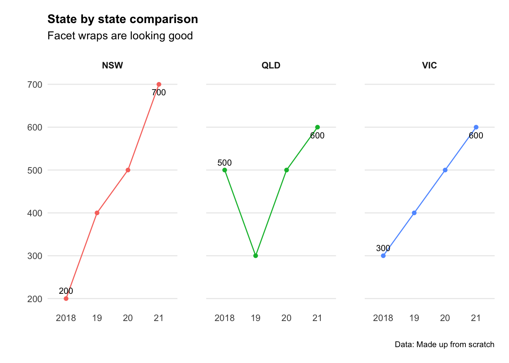
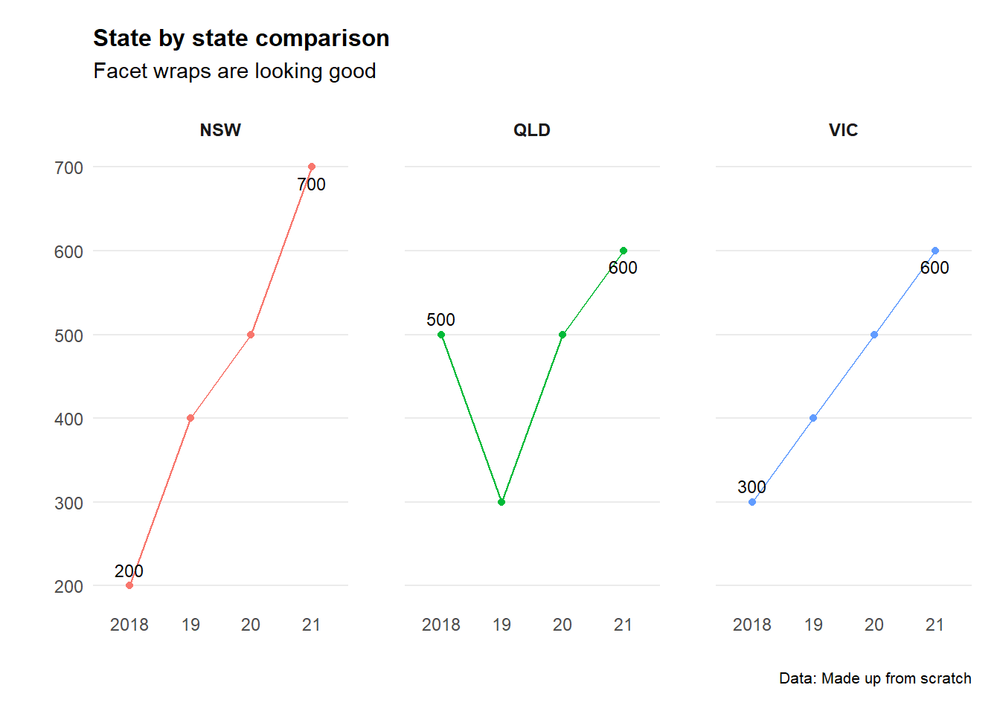

Chapter 5 Forecasting
5.1 Background
So we’ve got a time series dataset… but what is a reasonable forecast for how it might behave in the future? Sure we can do a confidence interval (as we learned in the previous chapter) - but what about forecasting for multiple periods into the future.
That’s where we need to build some models.
# Load in packages
library(ggridges)
library(ggplot2)
library(forecast)
library(ggrepel)
library(viridis)
library(readxl)
library(hrbrthemes)
library(dplyr)
library(stringr)
library(reshape)
library(tidyr)
library(lubridate)
library(gapminder)
library(grattantheme)
library(ggalt)
library(purrr)
library(scales)
library(purrr)
library(aTSA)
library(readrba)We’ll start with some pre-loaded time series data. The ggplot2 includes a data set called ‘economics’ that contains US economic indicators from the 1960’s to 2015.
econ_data <- economics %>% dplyr::select(c("date", "uempmed"))
econ_data <- econ_data %>% dplyr::filter((date >= as.Date("1970-01-01")
& date <= as.Date("1999-12-31")))As a side note: We can also get Australian unemployment rate data using the readrba function.
aus_unemp_rate <- read_rba(series_id = "GLFSURSA")
head(aus_unemp_rate)Let’s plot the data to see what we are working with.
ggplot(econ_data)+
geom_point(aes(x = date, y = uempmed), col = "grey", alpha=0.5)+
geom_smooth(aes(x = date, y = uempmed), col = "blue")+
labs(title="Unemployment rate",
caption = "Data: ggplot2::economics",
x="",
y="") +
theme_minimal() +
theme(legend.position="bottom")+
theme(plot.title=element_text(face="bold",size=12))+
theme(plot.subtitle=element_text(size=11))+
theme(plot.caption=element_text(size=8))+
theme(axis.text=element_text(size=8))+
theme(panel.grid.minor = element_blank())+
theme(panel.grid.major.x = element_blank()) +
theme(axis.title.y =
element_text(margin = ggplot2::margin(t = 0, r = 3, b = 0, l = 0)))+
theme(axis.text.y = element_text(vjust = -0.5,
margin = ggplot2::margin(l = 20, r = -10)))+
theme(plot.title = element_text(margin=ggplot2::margin(0,0,25,0))) +
theme(axis.line.x =
element_line(colour ="black",size=0.4))+
theme(axis.ticks.x = element_line(colour ="black",size=0.4))
5.2 ARIMA models
AutoRegressive Integrated Moving Average (ARIMA) models are a handy tool to have in the toolbox. An auto regressive model is one where Yt depends on its own lags. A moving average (MA only) model is one where Yt depends only on the lagged forecast errors. We combine these together (technically we integrate them) and get ARIMA.
First order of business, we may need to ‘difference’ our series to make it stationary. Let’s check if it is stationary using the augmented Dickey-Fuller test. The null hypothesis assumes that the series is non-stationary. A series is said to be stationary when its mean, variance, and autocovariance don’t change much over time.
# Test for stationarity
aTSA::adf.test(econ_data$uempmed)## Augmented Dickey-Fuller Test
## alternative: stationary
##
## Type 1: no drift no trend
## lag ADF p.value
## [1,] 0 -0.448 0.515
## [2,] 1 -0.279 0.564
## [3,] 2 -0.252 0.571
## [4,] 3 -0.218 0.581
## [5,] 4 -0.321 0.552
## [6,] 5 -0.399 0.529
## Type 2: with drift no trend
## lag ADF p.value
## [1,] 0 -3.05 0.0337
## [2,] 1 -2.54 0.1158
## [3,] 2 -2.43 0.1572
## [4,] 3 -2.58 0.0986
## [5,] 4 -2.68 0.0826
## [6,] 5 -2.82 0.0597
## Type 3: with drift and trend
## lag ADF p.value
## [1,] 0 -2.94 0.179
## [2,] 1 -2.33 0.438
## [3,] 2 -2.20 0.491
## [4,] 3 -2.33 0.439
## [5,] 4 -2.49 0.368
## [6,] 5 -2.69 0.285
## ----
## Note: in fact, p.value = 0.01 means p.value <= 0.01# See the auto correlation
acf(econ_data$uempmed)
# Identify patial auto correlation
Pacf(econ_data$uempmed)# Take the first differences of the series
econ_data <- econ_data %>% mutate(diff = uempmed-lag(uempmed))
ggplot(econ_data)+
geom_point(aes(x = date, y = diff), col = "grey", alpha=0.5)+
geom_smooth(aes(x = date, y = diff), col = "blue")+
labs(title="1st difference (Unemployment rate)",
caption = "Data: ggplot2::economics",
x="",
y="") +
theme_minimal() +
theme(legend.position="bottom")+
theme(plot.title=element_text(face="bold",size=12))+
theme(plot.subtitle=element_text(size=11))+
theme(plot.caption=element_text(size=8))+
theme(axis.text=element_text(size=8))+
theme(panel.grid.minor = element_blank())+
theme(panel.grid.major.x = element_blank()) +
theme(axis.title.y =
element_text(margin = ggplot2::margin(t = 0, r = 3, b = 0, l = 0)))+
theme(axis.text.y = element_text(vjust = -0.5,
margin = ggplot2::margin(l = 20, r = -10)))+
theme(plot.title = element_text(margin=ggplot2::margin(0,0,25,0))) +
theme(axis.line.x =
element_line(colour ="black",size=0.4))+
theme(axis.ticks.x = element_line(colour ="black",size=0.4))## `geom_smooth()` using method = 'loess' and formula 'y ~ x'## Warning: Removed 1 rows containing non-finite values (stat_smooth).## Warning: Removed 1 rows containing missing values (geom_point).ARIMA_model = forecast::auto.arima(econ_data$uempmed)
ARIMA_model
summary(ARIMA_model)
checkresiduals(ARIMA_model)
# Forecast for the next 10 time units
ARIMA_forecast <- forecast::forecast(ARIMA_model, newdata=econ_data$uempmed,h = 36,level=c(95))
# Plot forecasts
plot((ARIMA_forecast))